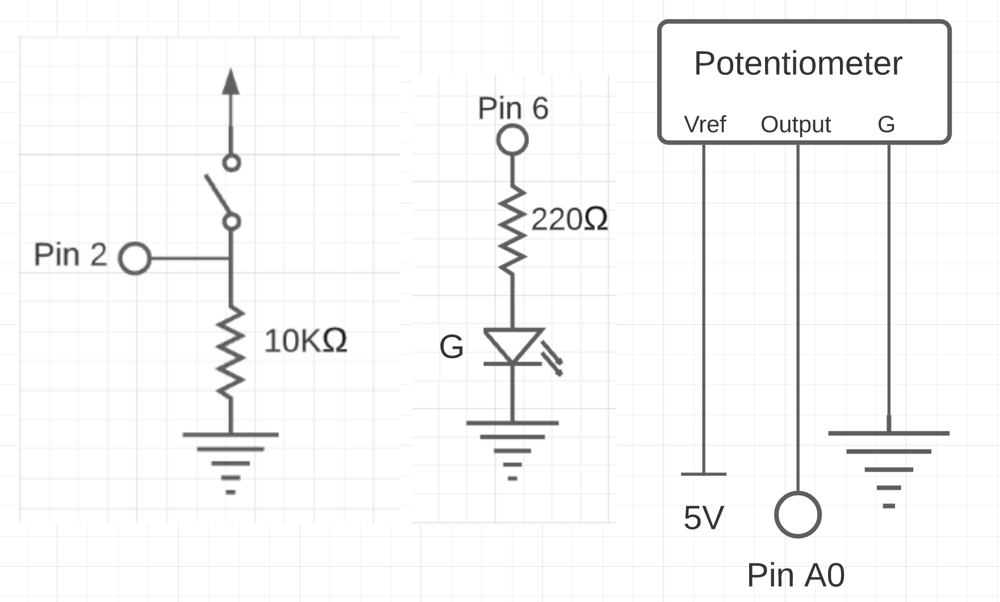

My Assignment 6!
Here is all the documentation for assignment 6. For this assignment I used a potentiometer, an LED, and a button to talk to my webpage. The potentiometer changed the brightness of the page, while my webpage kept track if the button has been pressed and whether the spacebar has been pushed or not. The LED turns on and off when the spacebar is pressed.
note: I struggled a lot with this project and had issues getting my serial to be read by my javascript code. I went to Nick's office hours and we still weren't able to figure it out. Becasue of the time crunch, I am submitting this assignment without a gif of the working product, with the hopes of receiving at least partial credit. I apologize as this is not my best work, but I did not want to submit nothing.
Schematic
These are the schematics for my LED, potentiometer, and button. For my button switch I used a 10k ohms resistor to reduce the amount of power it uses as much as I can while still providing enough power for it to work. For my green LED I used 220 ohm resistor. My calculations are shown below.
Green LEDs voltage drop: 1.8 V
5 - 1.8 = 3.2V
3.2/.02 = 160 -> 220 ohm resistor

`Circuit
Here is my breadboard and arduino connected to my potentiometer, LED, and button.

Firmware
This is my javascript and arduino code that keeps track of the serial data and communicates the data inbetween my arduino and my webpage.
Arduino Code
const int sensor = 0; //potentiometer
const int button_input = 2; //button in pin 0
const int led = 6; //led in pin 6
int brightness = 0; //tracks brightness level
void setup() {
Serial.begin(9600);
Serial.setTimeout(10);
pinMode(led, OUTPUT); //initialize LED
pinMode(button_input, INPUT); //initialize button
pinMode(sensor, INPUT); //initialize potentiometer
}
void loop() {
//pulled partially from class example-- led controlled by spacebar
if(Serial.available() > 0) { //check for serial data
int in = Serial.read(); //assign data to var
Serial.write(in); // send it back
if(in == 32 && digitalRead(7) == LOW){ //if spacebar is pressed and led is off
digitalWrite(led, HIGH); //turn on led
}else if(in == 32 && digitalRead(7) == HIGH){ //if spacebar is pressed and led is on
digitalWrite(led, LOW); //turn led off
}
}
//potentiometer
int sensorVal; //initialize var to track sensor value
sensorVal = analogRead(sensor); // read from the potentiometer
brightness = map(sensorVal, 0, 1023, 0, 255); // map the value from potentiometer (range from 0 to 1023) to the brightness (from 0 to 255)
Serial.write(brightness); // writes brightness to let value be read by p5
//button
int button = digitalRead(button_input);
delay(50);
//pulled from slides
int s1 = brightness; // set array[0] to potentiometer brightness
int s2 = button; //set array[1] to button input
//print array
Serial.print(s1);
Serial.print(",");
Serial.println(s2);
}
JS Code
var serial; // variable to hold an instance of the serialport library
var portName = "/dev/cu.usbmodem14401" //rename to the name of your port
var datain; //some data coming in over serial!
function setup() {
serial = new p5.SerialPort(); // make a new instance of the serialport library
serial.on('list', printList); // set a callback function for the serialport list event
serial.on('connected', serverConnected); // callback for connecting to the server
serial.on('open', portOpen); // callback for the port opening
serial.on('data', serialEvent); // callback for when new data arrives
serial.on('error', serialError); // callback for errors
serial.on('close', portClose); // callback for the port closing
serial.list(); // list the serial ports
serial.open(portName); // open a serial port
createCanvas(1200, 800);
background(0x08, 0x16, 0x40);
}
//
//pulled from class example
//writes what key is pressed
function keyPressed() {
//console.log(key);
serial.write(key); // write key code to serial for arduino to read
}
// get the list of ports:
function printList(portList) {
// portList is an array of serial port names
for (var i = 0; i < portList.length; i++) {
// Display the list the console:
print(i + " " + portList[i]);
}
}
function serverConnected() {
print('connected to server.');
}
function portOpen() {
print('the serial port opened.')
}
function serialError(err) {
print('Something went wrong with the serial port. ' + err);
}
function portClose() {
print('The serial port closed.');
}
// pulled from slides
function serialEvent() {
if (serial.available()) { //if there is serial to be read
var datastring = serial.readLine(); // readin some serial
var newarray; //create new array
try {
newarray = JSON.parse(datastring); // can we parse the serial
print(newarray);
} catch(err) { //print error if array is not made
console.log(err);
}
if (typeof(newarray) == 'object') {
dataarray = newarray; // set new array to be data array
}
console.log("got back " + datastring); //prints to console the data
}
}
function draw() {
//pulled from class example
background(0); //set background to black
if (dataarray[1] == 1) { //if button is pressed
text("button pressed: YES", 30,30);
print("clicked");
} else { //default button to not being pressed
text("button pressed: NO", 30,30);
}
// change background brightness based on potentiometer input
// code based on https://medium.com/@yyyyyyyuan/tutorial-serial-communication-with-arduino-and-p5-js-cd39b3ac10ce
var brightness = map(dataarray[0], 0, 255, 0, 255); // map input to the correct range of brightness
fill(brightness); // fill background with brightness corresponding from potentiometer info
// draw the text - left
var textLColor = map(brightness, 0, 255, 255,0); // inverse the color for drawing the text on background
fill(textLColor); //fill color based on background
textSize(16); //text size 16
text("BRIGHTNESS LEVEL: " + dataarray[0], 30, 100); // displaying the input
}